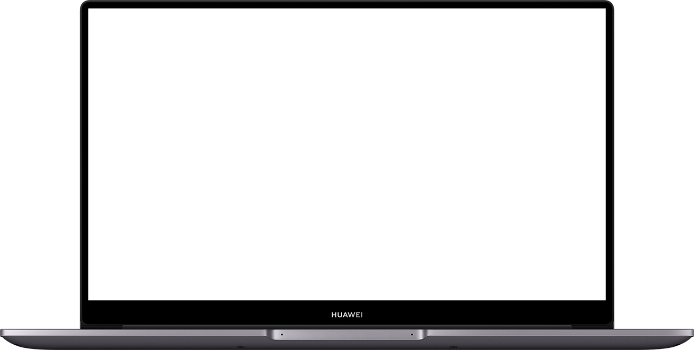

多端开源，
提升更多学习交流途径
提供了PC端、移动端、响应式的开源项目，也涉及前端、后端、以及全栈和项目部署。可以在Github、Bilibili、ZerooJS 博客等途径免费获取这些项目的源代码以及演示视频。
更多开源项目

提供了PC端、移动端、响应式的开源项目，也涉及前端、后端、以及全栈和项目部署。可以在Github、Bilibili、ZerooJS 博客等途径免费获取这些项目的源代码以及演示视频。
更多开源项目当我们在工作中大量编写表单、数据交互、业务逻辑的时候，早就忘了最纯粹的前端。 通过我的一点小小想法，希望能唤醒你最初的兴趣。 我们每个人都是设计师也是评鉴师！
更多交互效果